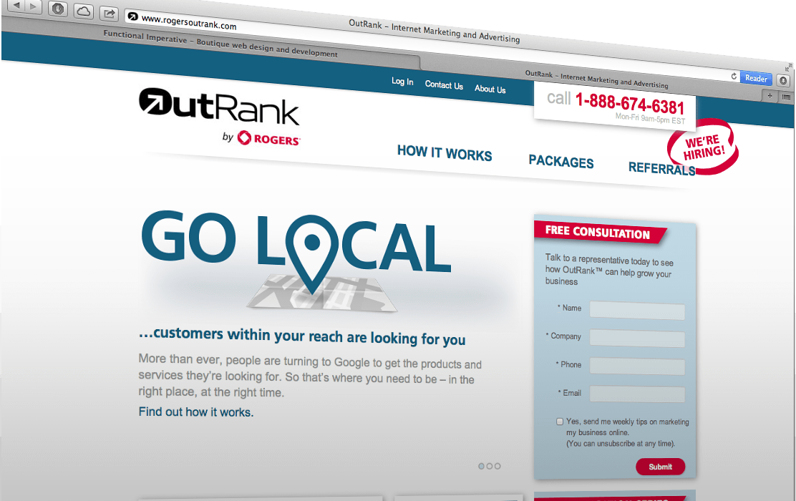
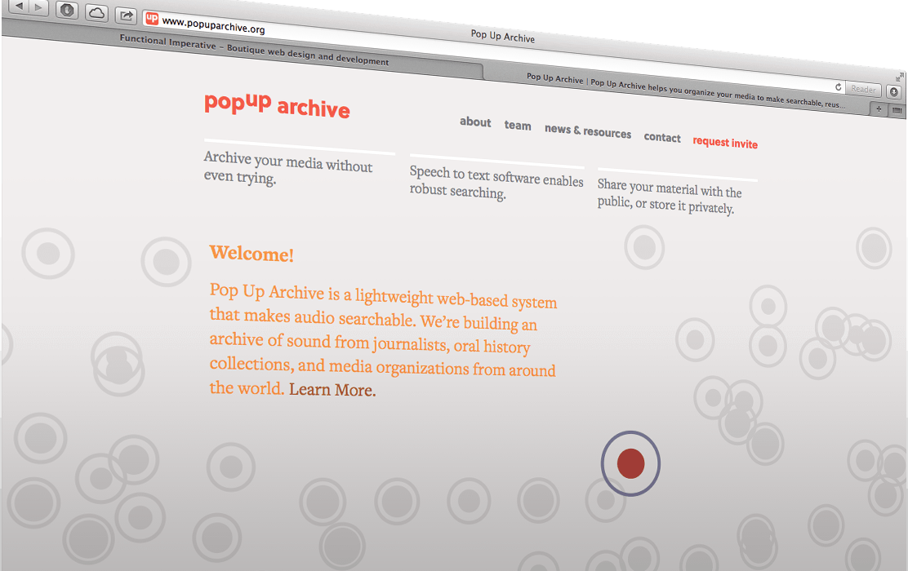
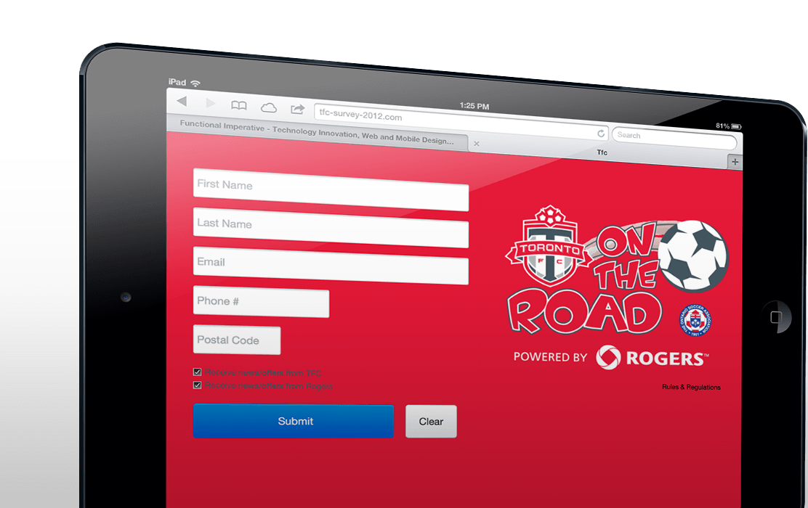
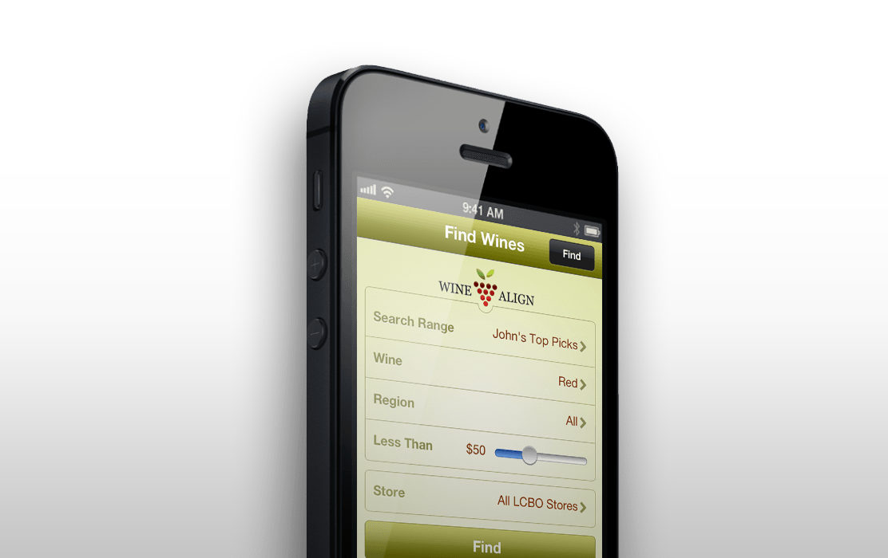
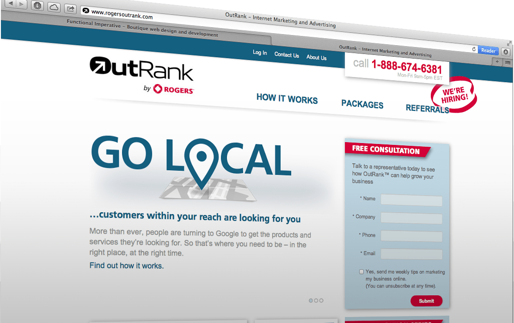
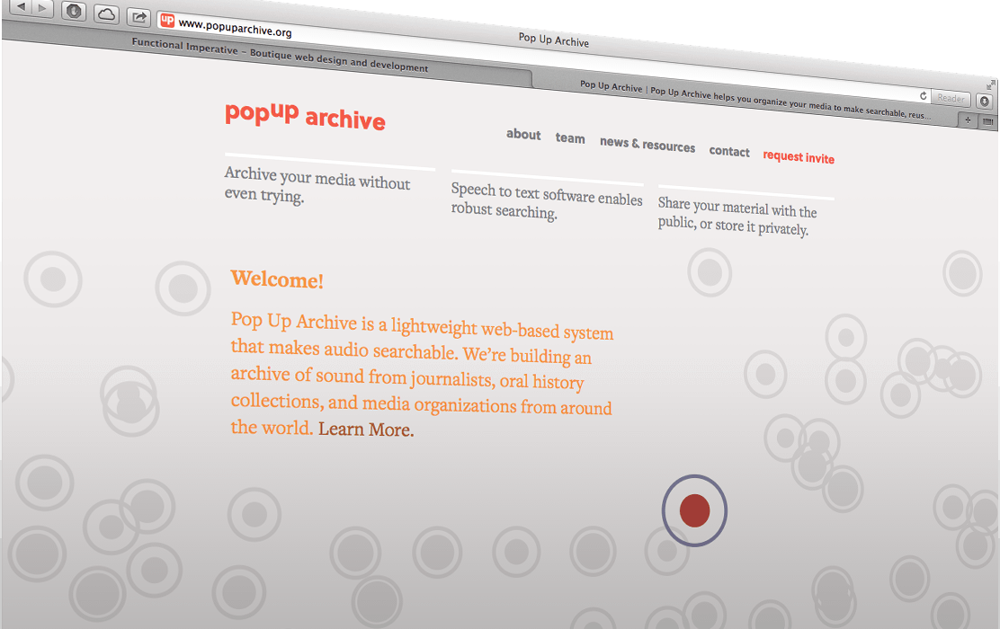
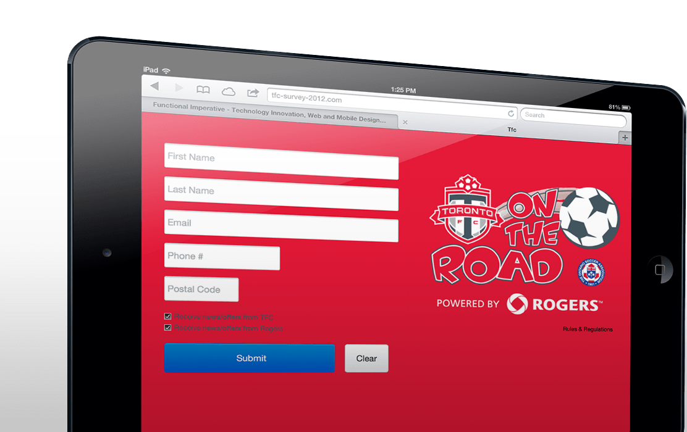
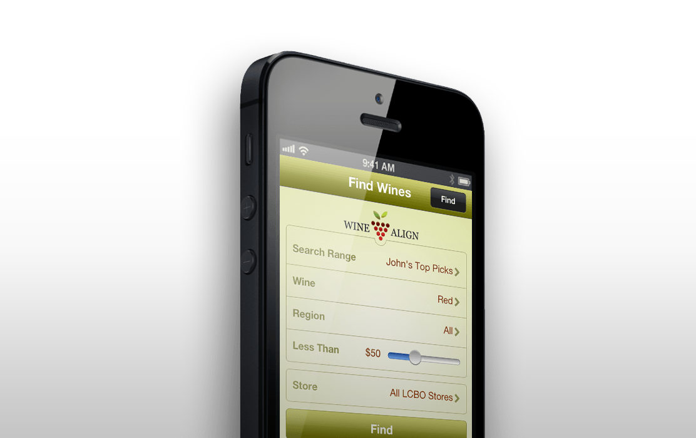
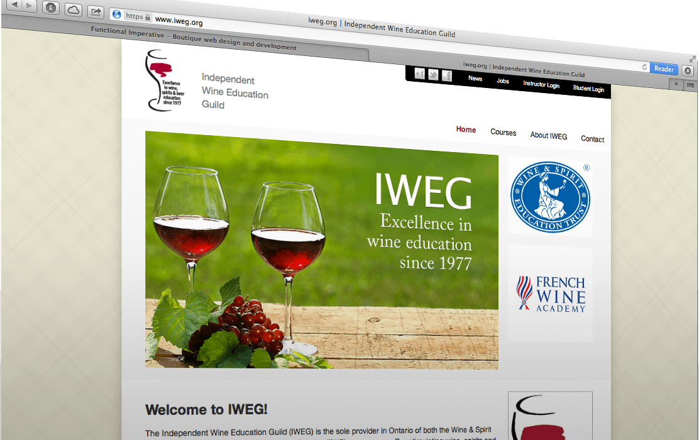
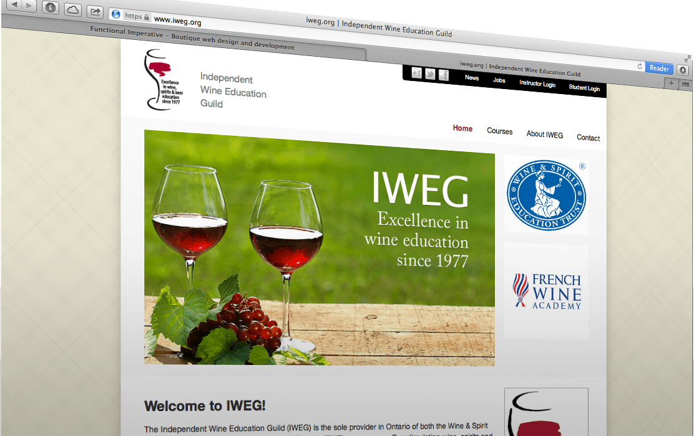

 


Hammerati
uKnowa originally hired Fi to design the API for their Hammerati product. This partnership was quickly expanded to their entire process as they were able to realize dramatic improvements in development velocity.
With strong momentum and Fi's help, uKnowa is poised to disrupt the entire construction industry.
www.Hammerati.comRogers OutRank
OutRank is Rogers Communications' solution to helping small businesses in Canada manage their online marketing programs. OutRank offers customers a custom web site, search engine optimization, lead generation and analytics.
www.RogersOutRank.comPopup Archive
Popup Archive is a lightweight web-based system that makes audio archives searchable.
Launched at SXSW 2013, Popup tasked Fi with the development of an interactive story to introduce prospective clients. Building upon new web technologies like the Web Audio API and SVG, Fi delivered an experience as cutting edge as the archive itself.
www.PopupArchive.orgTFC - On The Road
A community based partnership between the Toronto Football Club and Rogers Communications that is designed to connect, grow and celebrate soccer participation from the grass roots level up.
Fi was tasked with building an iPad data capture and analysis tool that leverages HTML5 local storage to reliably upload data for later analysis despite poor internet connectivity.
www.TorontoFC.ca/on-the-roadWineAlign
WineAlign is a community based service for reviewing, sharing and discovering wine. Intergrated with the LCBO and other provincial distributors, WineAlign is able to uniquely point you towards that perfect bottle on the shelf.
Fi was hired to continue development of WineAlign's iOS and Android mobile applications, both of which are available for download in the respective app stores.
www.WineAlign.comSpan6
Span6 is a cutting-edge Online Marketing and Sales platform that enables advertisers to easily channel traffic from affiliate campaigns, convert visitors into leads and track performance through the entire process.
Built from the ground up by Functional Imperative, the work continues as Span6 grows into its market leading position.
www.Span6.comCdling
Cdling leverages the power of prediction markets to build reliable credit ratings for technology startups. With Fi's previous experience in the financial industry, we were hired to help design and build the core trading technology and user interface components at the heart of the platform.
www.Cdling.comInkspand
Inkspand is a book discovery platform and marketplace for crowdsourcing feedback for authors. Replacing antiquated and expensive publishing processes, Inkspand is making a splash in the industry by providing value to authors and readers alike.
Fi trimmed scope and designed and delivered a minimum viable product that has allowed Inkspand to gain revenue as development continues.
www.Inkspand.orgIndependent Wine Education Guild
IWEG is the sole provider in Ontario of both the WSET and FWS programmes.
Functional Imperative was hired to build a custom education and administrative portal that would replace the pen and paper processes IWEG employed and provide students with digital content, registration and course management features.
www.iweg.orgeBounties
eBounties taps into the knowledge of the crowd to help individuals find what they are looking for.
Leveraging PayPal's adaptive API, Functional Imperative built a peer to peer marketplace that transparently and safely connects bounty posters and claimants, enabling the creating of a marketplace for information.
www.eBounties.comeQuibbly
eQuibbly relies on the power of crowds to resolve disputes.
Working within a limited budget, Fi leveraged Lean Methodologies to help the client reduce scope and focus on the core challenges to eQuibbly's business. With an MVP in place, eQuibbly has been able to focus on marketing and quickly iterating to stay one step ahead of the competition.
www.eQuibbly.com